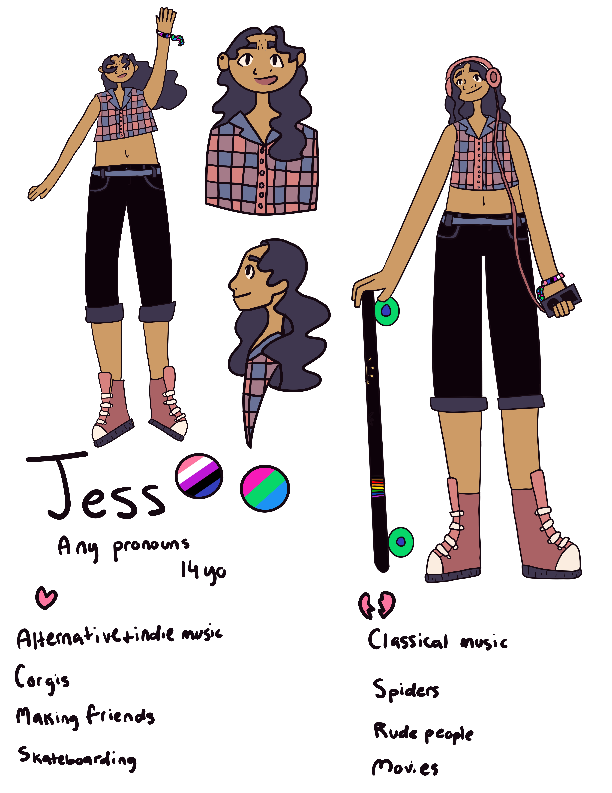

How To Design A Character
Designing a character can be tough. On this website, I'll show you my process for designing and drawing my characters! Let's jump in!
Step 1: Find Inspiration
Inspiration is crucial when designing a character. If you're not inspired, the character might be boring or look a lot like others'. To get inspiration, I go outside or browse the internet! I use pinterest since there are tons and tons of photos of pretty much anything and everything.
Step 2: Create a Mood Board
After you've found inspiration, the next thing you'll want to do is create a mood board. This can be digital or in real life. The mood board is basically what you'll use to keep your inspiration for the character and save some elements you want for the outfit, hair, etc.
Here's my example:

Step 3: Let's start!
Now that you have all your inspiration, it's time to start designing your character! You'll have found the elements you want to include for your character, possibly some color schemes you like and pretty much everything you need to start! So now, the design process commences.
Drawing your character
Keep in mind, all these steps are optional and you can add and remove any of them. This is how I draw my characters.
Step 4: Rough sketches
The first thing we'll do is create some rough sketches of the character. For example, these will decide the body type, basic shapes etc.

Step 5: Refine your sketches
Now you have some rough sketches of your character. This will give you a guide for the next stage, which is refining your sketches. This means you'll add details and refine certain parts. If you're designing your character digitally, do this stage on a new layer. If you're designing your character traditionally, lightly erase your rough sketches so that you can still see them but they don't overpower the new ones.

Step 6: Lineart
If you don't use lineart, you can skip this step!
If you do use lineart, do your lineart on top of the refined sketches.
Step 7: Base Colors
After you do your lineart (or if you don't use lineart in your art style), the next step is filling in your base colors. This means flat colors: no lighting just yet.
Step 8: Color your lineart
If you didn't do lineart, you can skip this step!
If you do lineart and you're a digital artist, your next step is to color your lineart. This step is optional of course; it's just an effect I like to add to my digital art. To do it, create a new layer on top of your lineart. Set it to clipping and you're good to go! You can do different colors for different parts or keep it all the same. Whatever you like.
Step 9: Shading
Now that you have your base colors, you can start shading! For traditional artists, this is pretty easy. Just shade on top of your colors. For digital artists, create a new layer on top of your base colors and set it to clipping. Then set it to multiply. Or, if you want soft shading, keep it on normal and use a darker color.

Step 10: Lighting
Now you can add some lighting! This step can come before the shading, of course, but I usually do it after so that I don't go overboard. For traditional artists, adding lighting to your character depends on the medium you're using. For digital artists, add a new layer, set it to clipping, and set the blending mode to a mode that makes it lighter. This can be add, overlay or whatever you like to use. If you want soft lighting, keep the blending mode on normal and pick a lighter color.

Step 11: Finishing touches
Now add some finishing touches to your character! This can be anything you like. It's up to the artist. For me, I like adding a gradient overlay and some noise on top of my digital art. For my traditional art, I add some highlights with a white gel pen.

Step 12: Sign your artwork!
Last but not least, sign your artwork!

Congratulations!
You've created your very own character!
©2021 Ella Mueller